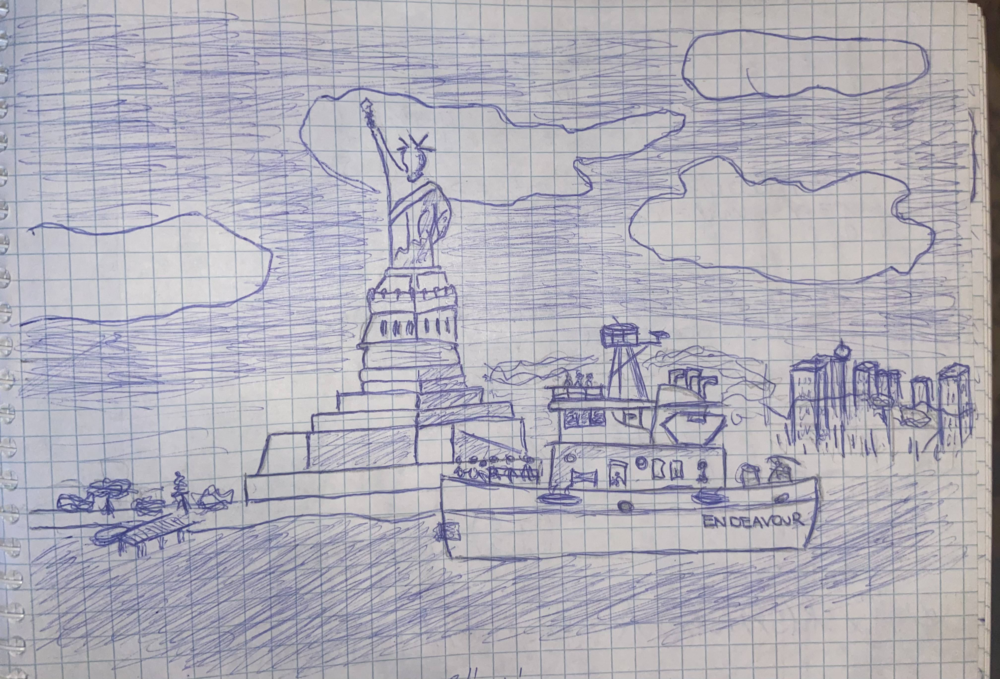
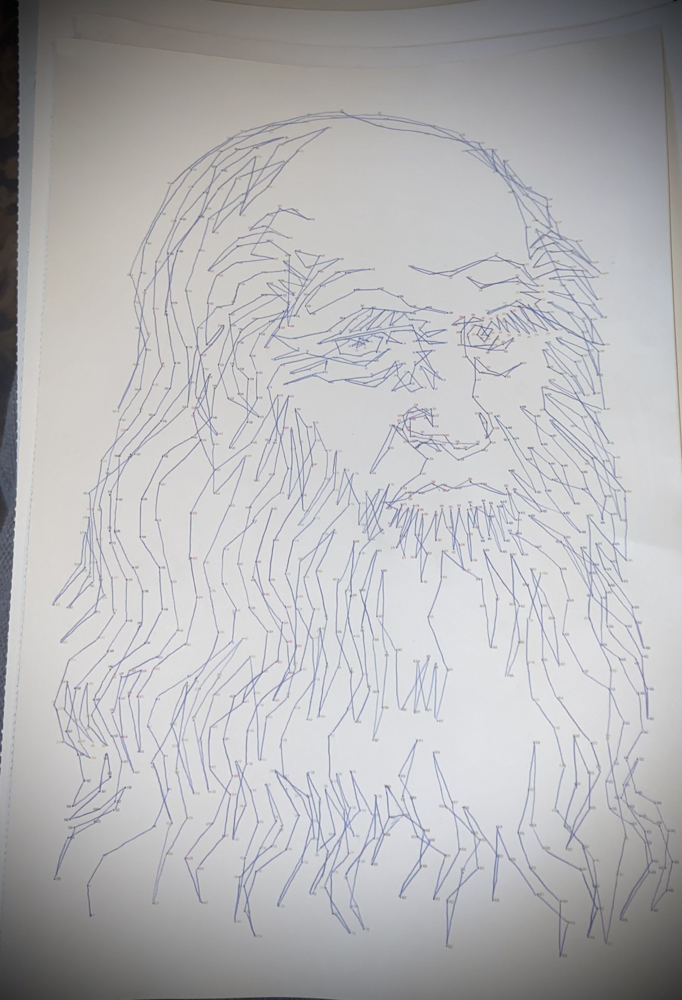

Rajzaimnak három főbb kategóriája van, ezekben szeretek rajzolni, és javarészt ezekben érzem kényelmesen magam. A csendéleteket, amik réteket, farmokat ábrázolnak általában akkor szeretem rajzolni, hogyha épp valami nyugodttabb környezetre vágyom, ahol semmi se zargathatna csak a lengedező szellő.

A mélyebb tartalmakat rejtő képeimet általában úgy rajzolom, hogy aki keresni akarja bennük a tartalmat meg is találja. Az alábbi képemet például a Matek G1-es füzetembe rajzoltam, vizsgára gyakorlás megunása után. A kép azt ábrázolja, ahogy a "KITARTÁS" nevű hajó, éppen úszik a Szabadság-szobor, tehát a szabadság felé. Körülbelül én is így éreztem készülés közben.

A számomra egyik legnehezebb ábrázolás az ember ábrázolása, alapvetően egy embert nem nehéz ábrázolni sziluettek alapján, de élethűen kinézőt már relatíve az. Messzemenően egy ember arcán kell figyelni a legtöbb vonásra, és hogyha egész testes képet rajzolunk, a végtagokra,tartásra, pozícióra is óriási figyelmet kell fektetni,máskülönben nagyon ki fog tünni a környezetéből. Az emberi rajzokat, hogyha lehetséges inkább kerülöm, illetve megpróbálom őket a lehető legminimalistábban megrajzolni. Ez természetesen nem jelenti azt, hogy hanyag rajzot csinálnék, egyszerűen csak nem a valóságot adom át, hanem egy ettől eltérő szürreális dolgot mutatok.